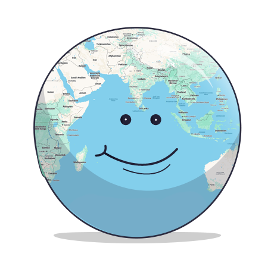
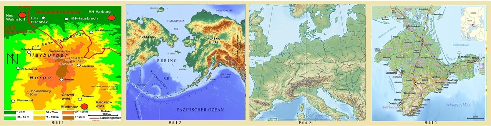

physische Karten
 |
Eine physische Karte zeigt, wo Berge, Flüsse, Seen und Wüsten auf der Erde sind. Du kannst auf der Karte sehen, wo die Alpen oder die Elbe liegen. Auch große Seen wie der Bodensee sind zu erkennen. Physische Karten helfen uns also zu verstehen, wie die Erdoberfläche aussieht. Physische Karten können immer anders aussehen. Achte auf die vielen Farben auf den Karten! Sie verraten dir, wie hoch oder tief ein Land liegt. Je dunkler das Braun, desto höher der Berg. Die grüne Farbe zeigt dir das Tiefland. Und die blaue Farbe steht natürlich für das Wasser. Auch hierbei gilt: je dunkler das Blau, desto tiefer das Gewässer. |

(Quelle: 1. Falk Oberdorf, Osterstr. 8, 32312 Lübbecke, Public domain, via Wikimedia Commons, Fundstelle; 2. Beringmeer-Aleuten-Karte, © OpenStreetMap contributors, CC BY-SA 2.0,, via Wikimedia Commons, Fundstelle; 3. Alexrk2, CC BY-SA 3.0, via Wikimedia Commons, Fundstelle; 4.Maximilian Dörrbecker (Chumwa), Physische Karte der Krim, CC BY-SA 2.0, via Wikimedia Commons, Fundstelle)
Jetzt bist du dran!
Hast du gut aufgepasst? Welche Karten sind physische Karten?